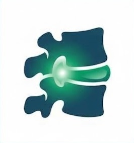
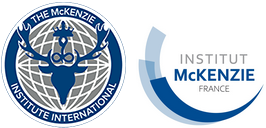
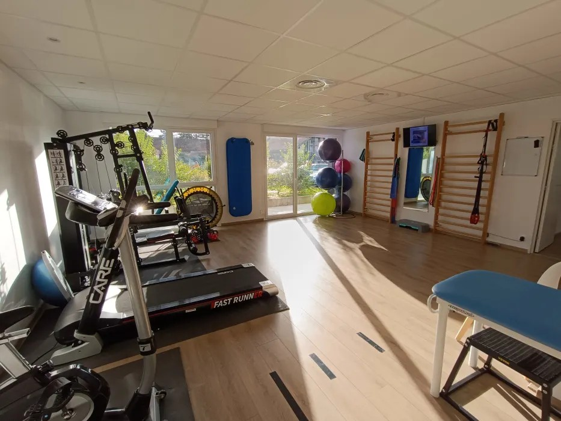
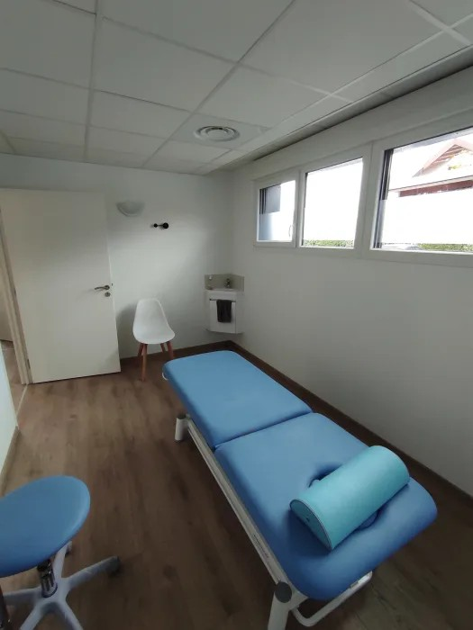
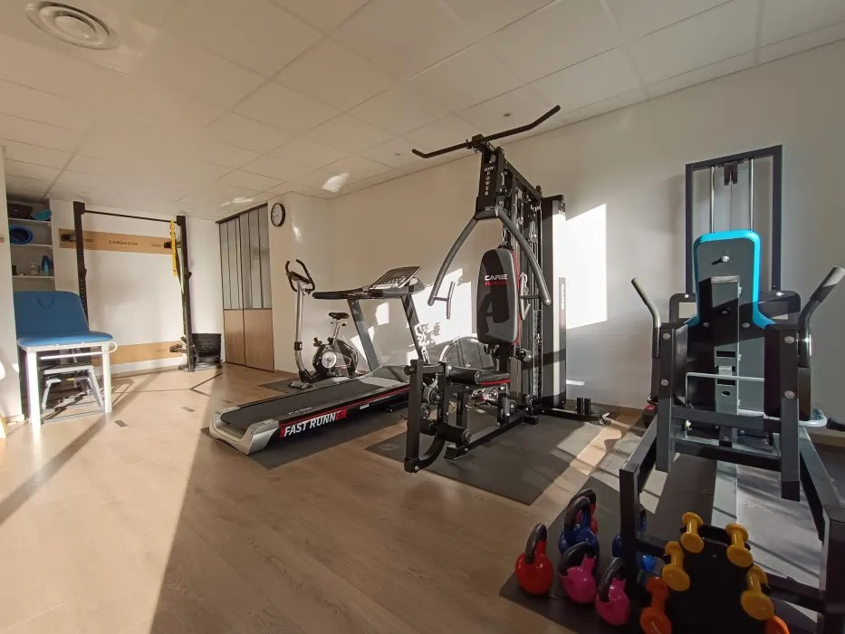

Ma pratique s'appuie sur la démarche Evidence-Based Practice (EBP) : meilleures données scientifiques disponibles, évaluation clinique individualisée et prise en compte de vos objectifs. L'objectif est de vous aider à comprendre votre problème, retrouver du mouvement et devenir progressivement autonome.

Comprendre la douleur, retrouver de la mobilité et reprendre progressivement les activités au quotidien.
En savoir plus →
Évaluer les symptômes, leur comportement mécanique et construire une rééducation ciblée.
En savoir plus →
Faire le lien entre imagerie, symptômes et fonction sans réduire la prise en charge à l'IRM.
En savoir plus →Analyse précise des symptômes, des mouvements, des contraintes et des facteurs qui influencent votre problème.
Des explications claires pour mieux comprendre votre douleur et éliminer les croyances qui ralentissent la récupération.
Exercices personnalisés et progressifs sur le plateau technique pour développer vos capacités et favoriser l'autonomie.

Je suis Certifié en Diagnostic et Thérapie Mécanique (MDT) — Méthode McKenzie. Ayant accompli l'intégralité du cursus de formation (Modules A, B, C, D et E) et réussi l'examen de certification, cette qualification garantit une maîtrise rigoureuse des concepts cliniques, du bilan et des protocoles de prise en charge McKenzie.
Cette approche s'appuie notamment sur l'évaluation des mouvements répétés et la recherche d'une préférence directionnelle afin de cibler les exercices les plus efficaces. Elle favorise une rééducation active et vous donne les clés pour devenir autonome dans votre rétablissement.
Elle n'est pas appliquée de manière systématique ou dogmatique : le choix des outils de rééducation dépend toujours des résultats du bilan initial et de vos objectifs personnels.

Plateau technique & gymnase

Salle de soin individuelle

Espace de réentraînement actif